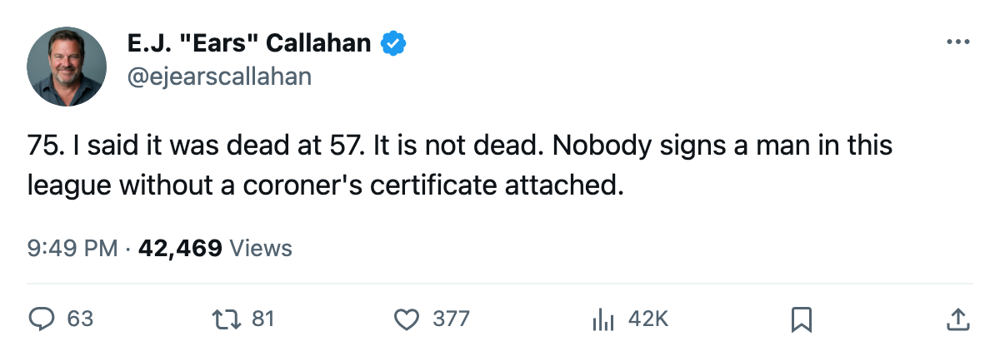
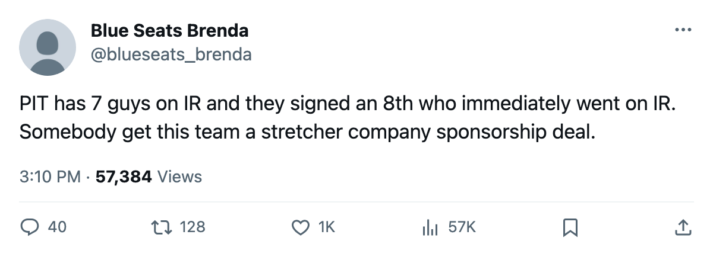

RUMOR METER: FLA, NSH and PIT Sign 3 Men on February 25. All 3 Are on IR. The Streak Hits 75. 🔥🔥
The cheapest man on the run earns $108,240. The longest absence goes past May. And the league filed a 5-player trade between two playoff teams that nobody flagged until today.
 E.J. "Ears" CallahanInsider · The Hot Stove
E.J. "Ears" CallahanInsider · The Hot Stove

Streak hits 75: 3-for-3 on February 25

The streak is 75. Florida, Nashville and Pittsburgh each put pen to paper on February 25. All three men are on the injured list as of today.
 Joe Nieuwendyk82 signed with
Joe Nieuwendyk82 signed with  Florida Panthers for $108,240. A groin. Out until March 19, which is what the calendar has as the trade deadline. Vernon Fiddler75 went to
Florida Panthers for $108,240. A groin. Out until March 19, which is what the calendar has as the trade deadline. Vernon Fiddler75 went to  Nashville Predators for $473,030. A groin. Out until May 12. Ross Lupaschuk70 went to
Nashville Predators for $473,030. A groin. Out until May 12. Ross Lupaschuk70 went to  Pittsburgh Penguins for $309,010. An abdomen. Out until March 31.
Pittsburgh Penguins for $309,010. An abdomen. Out until March 31.
Three signings. Three injuries. The pattern now covers every man signed in this window since October. The cheapest man on the run costs $108,240. The longest absence, Fiddler to May 12, puts a $473,030 body on the shelf for the rest of the postseason.
Pittsburgh is 7 deep on the shelf
PIT has 7 players on the injured list, the most in the league. Lupaschuk is the newest.  Aleksey Morozov79 (leg, March 6), Brian Holzinger76 (concussion, March 4),
Aleksey Morozov79 (leg, March 6), Brian Holzinger76 (concussion, March 4),  Guillaume Lefebvre75 (foot, May 15),
Guillaume Lefebvre75 (foot, May 15),  Kris Beech70 (groin, March 3), Josef Melichar68 (back, March 13), and Pasi Salminen71 (hip, March 7) are the other six. The Penguins sit at 63 points in the Atlantic, 24 back of New Jersey. They signed a defenseman on February 25 who cannot play for another four weeks.
Kris Beech70 (groin, March 3), Josef Melichar68 (back, March 13), and Pasi Salminen71 (hip, March 7) are the other six. The Penguins sit at 63 points in the Atlantic, 24 back of New Jersey. They signed a defenseman on February 25 who cannot play for another four weeks.
CONFIRMED: 5 players, 1 pick, two clubs chasing a playoff seed
The league filed a trade on February 26.  Washington Capitals sent Brian Sutherby and Jeff Halpern to
Washington Capitals sent Brian Sutherby and Jeff Halpern to  Tampa Bay Lightning for Pascal Trepanier, Lance Ward and Cory Sarich. The record now shows a pick moved as well, making it a 5-player, 1-pick deal. Confidence is news. CONFIRMED.
Tampa Bay Lightning for Pascal Trepanier, Lance Ward and Cory Sarich. The record now shows a pick moved as well, making it a 5-player, 1-pick deal. Confidence is news. CONFIRMED.
WSH holds 81 points, second in the Southeast. TB holds 86, first in the Southeast. Both are in. Sarich carried 2 goals and 19 assists in 64 games with Tampa Bay this season. He goes to Washington, which carries the 7th-highest payroll in the league at $55.92M and $17.00M in profit. Tampa Bay gets two depth forwards and keeps its division lead.
The Bureau's Morale Scale has WSH at 96.1 as a club, third-best in the league. TB sits at 98.2, second only to Vancouver. Neither needed to stand pat.
The read
Three clubs signed three men this week. Three men are hurt. The streak is 75 and the trade deadline is 17 days away. Nobody is going to sign anyone next week. I'd put money on that, no sheet to prove it.
CONFIRMED vs. DENIED: The TB-WSH trade is confirmed by the league record. The streak at 75 is confirmed by the injured list and the transaction file. The prediction that nobody signs next week is open.

